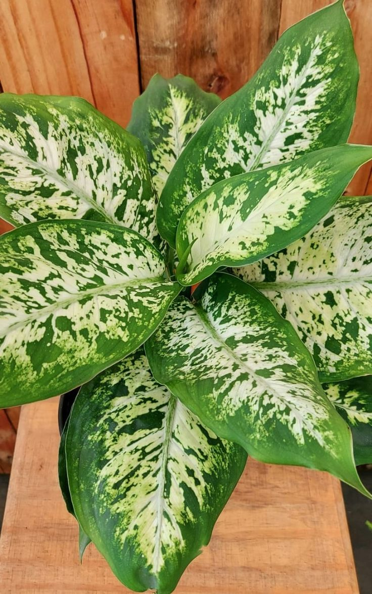

Comigo-ninguem-pode
Comigo-ninguém-pode (Euphorbia tirucalli), também conhecida como "vara-de-piche" ou "falso cacto", é uma planta suculenta nativa da África e amplamente cultivada em regiões tropicais e subtropicais. Essa planta é facilmente reconhecível por seus ramos longos e finos, que podem crescer verticalmente, lembrando uma vara ou bastão. Os ramos são verde-claros e podem atingir até 3 metros de altura.
A "comigo-ninguém-pode" é uma planta resistente e de baixa manutenção, preferindo ambientes ensolarados e solo bem drenado. Ela armazena água em seus ramos, o que a torna bastante tolerante à seca, sendo uma ótima opção para jardins xerófitos ou como planta de interior.
Além de sua aparência única, a planta contém um látex branco e leitoso que pode ser tóxico e irritante para a pele e os olhos. Por isso, deve-se ter cuidado ao manuseá-la e mantê-la fora do alcance de crianças e animais de estimação. No entanto, muitas pessoas apreciam a "comigo-ninguém-pode" por sua beleza exótica e pelo impacto visual que proporciona em arranjos paisagísticos.